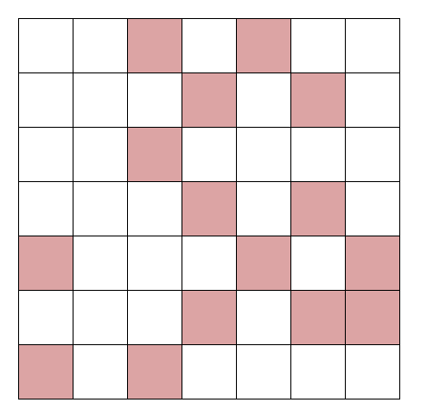
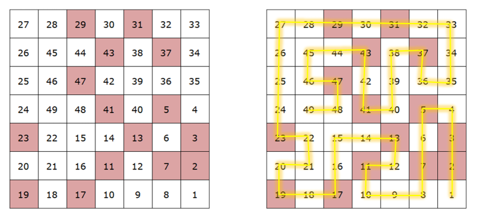
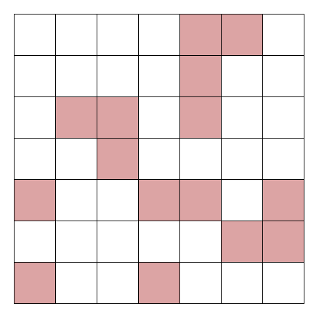
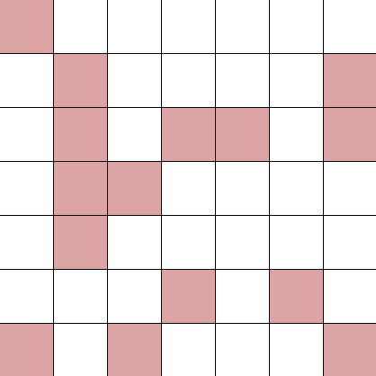

layout: true background-image: url(green-spiral-pattern.jpg) --- class: center, middle # Hamiltonian Path Puzzle ### Preučevanje Hamiltonovih poti v tabeli ??? Na tej predstavitvi bomo raziskali problem Hamiltonove poti, njegov zgodovinski kontekst, algoritme za reševanje in praktične aplikacije. <!-- nov slide --> --- # Kaj je za nas Hamiltonova pot v tabeli? - **Vsak kvadratek** v tabeli moramo obiskati **natanko enkrat**. - Na **obarvane** kvadratke lahko stopimo, če in samo če je **število korakov**, ki smo jih naredili **praštevilno**. - Premikamo se lahko le v štirih smereh: **levo, desno, navzgor in navzdol**. <!-- nov slide z obstoječo vsebino --> --- <!-- prepreči, da bi se nadaljevanje štelo kot nov slide --> ### Spodaj je podan primer 7x7 tabele poskusimo, ga rešiti: <!-- besedilo ali elemente lahko poravnamo z .left[...], .center[...] ali .right[...] --> .center[] -- count:false * Kateri par praštevil je numerično ena cifra narazen? Kaj to pomeni za rdeče kvadratke? -- count:false Rešitev *(Spodaj je navedena ena izmed možnih rešitev. Rešitev ni enolična.)*: .center[] --- # Preprost rekurzivni backtracking algoritem - Algoritem raziskuje vse možne rešitve s pomočjo rekurzije. - Če naleti na slepo ulico, "vrne nazaj" (backtracks) in poskusi drugo možnost. - Postopek ponavlja, dokler ne najde rešitve ali izčrpa vseh možnosti. -- name: ime count:false ## Kako deluje? 1. **Raziskovanje**: Algoritem izbira možnosti, korak za korakom. 2. **Backtracking**: Ko izbira vodi do napake, se vrne na prejšnji korak. 3. **Konec algoritma**: Rešitev je najdena, ko so izpolnjeni vsi pogoji, ali pa ni več možnih poti. --- template: nadaljnje-moznosti ### Za domačo vajo poskusite sprogramirati [`algoritem`](#ime) in rešite naslednje primere: <div style="display: flex; justify-content: space-evenly; align-items: center;"> <div class="left" style="padding: 5px;">  <!-- Povečano za 1.5x --> </div> <div class="right" style="padding: 5px;">  <!-- Povečano za 1.5x --> </div> </div> --- # Viri - Slike in besedilo povzeto po: [DataGenetics - October 2021 Blog](https://datagenetics.com/blog/october12021/index.html) <table border="1"> <tr> <td><button onclick="klik()">Klikni me.</button></td> <td id="klik-na-gumb"></td> </tr> </table>